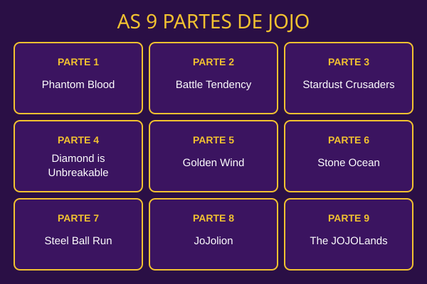

A
ana.jojofan
Teresina, PI

1.987 curtidas
ana.jojofan Comecei pela Parte 1, Phantom Blood. A rivalidade entre Jonathan Joestar e Dio Brando é o ponto de partida de toda a saga. #JoJo
Há 2 horas
ana.jojofan
Teresina, PI
1.987 curtidas
ana.jojofan Comecei pela Parte 1, Phantom Blood. A rivalidade entre Jonathan Joestar e Dio Brando é o ponto de partida de toda a saga. #JoJo
Há 2 horas
lucas_stand
Parnaíba, PI

842 curtidas
lucas_stand Os Stands aparecem na Parte 3, Stardust Crusaders. Inventei a ficha do meu: Café Expresso, velocidade A! #Stand
Há 5 horas
bia.gogogo
Picos, PI

3.402 curtidas
bia.gogogo Quando aparece aquele "ゴゴゴゴ" na tela, eu já sei que vem coisa séria.
Há 1 dia
rafa_9partes
Floriano, PI

517 curtidas
rafa_9partes Mapa das partes: já são 9, e cada uma tem um JoJo diferente como protagonista. Qual é a sua favorita?
Há 3 dias